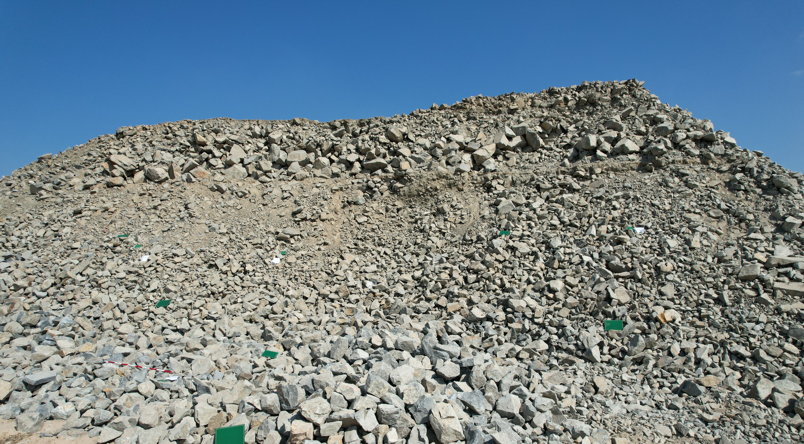
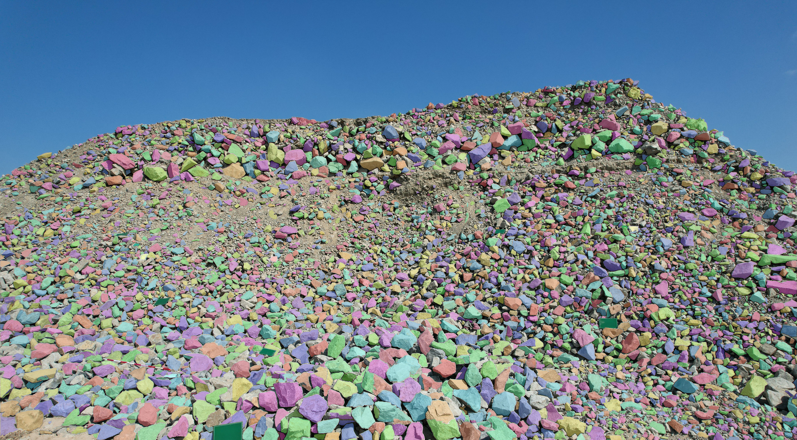
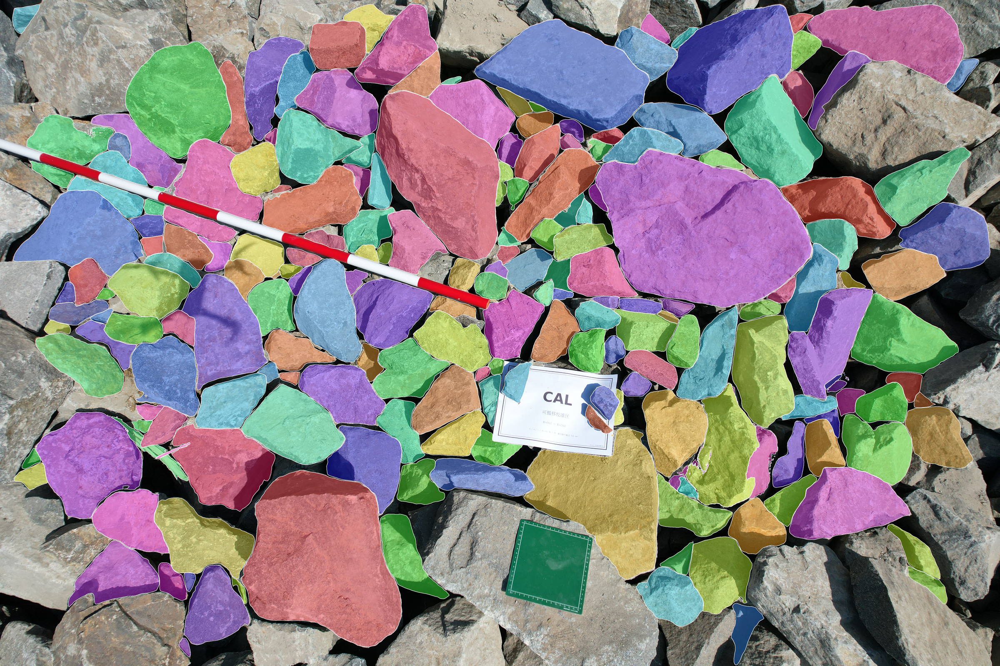
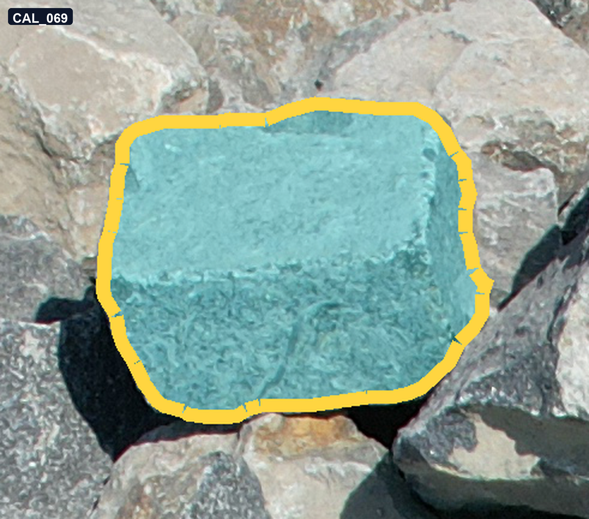
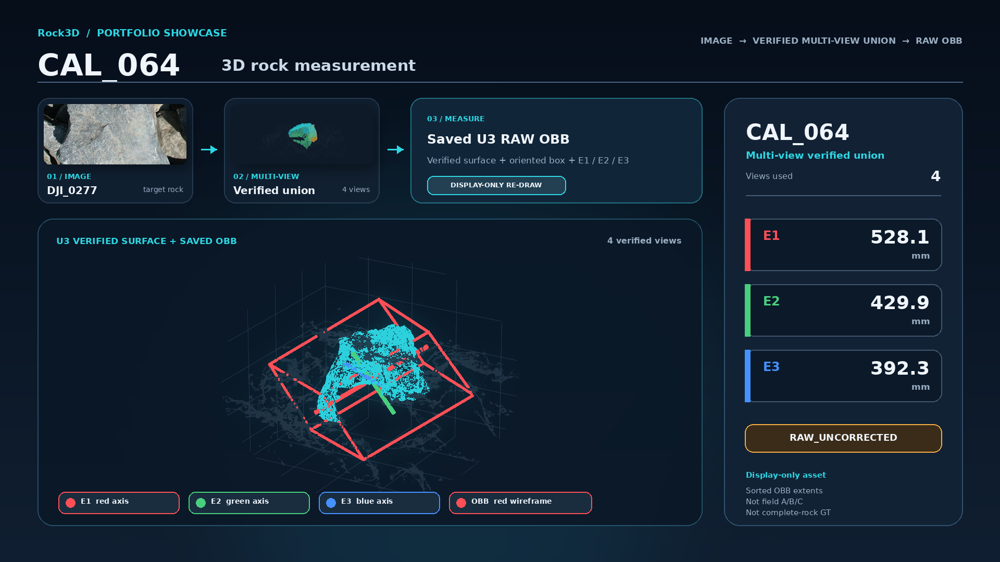

Main showcase · Supporting case
Continuous Multi-view Surface Gain
Complementary views add verified visible surface along one continuous camera sequence.
Portfolio showcase · Engineering vision
AI-driven UAV Photogrammetry and 3D Rock Measurement
A reproducible workflow that connects field imagery to verified multi-view rock surfaces and interpretable 3D measurements.
Main showcase · Supporting case
Complementary views add verified visible surface along one continuous camera sequence.
Scene-level demonstration
A scene-level demonstration connecting panoramic rock imagery, instance-level recognition, and reconstructed 3D geometry.
Input scene
Wide-view field imagery covering the rock pile scene.

2D recognition
Instance masks visualize recognized rocks across the panoramic scene.

3D scene
A compact 3D scene demonstration derived from the photogrammetric reconstruction.
Local detail
A closer view showing instance-level recognition at local image scale.

Portfolio demonstration only. This section does not introduce a new research result or change the frozen 2D method.
How it works · CAL_069
The method follows the same rock across complementary views, validates the visible surface contributed by each image, and builds a traceable 3D union.

Identify the same rock in a real UAV or close-range image.
Inspect complementary images and retain only human-approved visible surfaces.
Add each view's new contribution without resetting the rock identity.
Use the verified visible-surface union for downstream geometric interpretation.
Why multi-view matters
CAL_069 shows successive contributions from DJI_0169, DJI_0159, and DJI_0170. The figure is supporting evidence—not the page's primary visual—so the method stays understandable without turning the portfolio into a QA report.
Research demonstration: the displayed geometry is a verified visible-surface union, not a claim of complete-rock ground truth.
Measurement example · CAL_064
A clean static example connects the final verified surface to an oriented bounding box and three sorted geometric extents.

The display keeps the rock surface, bounding box, and measurement axes in one readable frame for a fast portfolio-level explanation.
Sorted OBB extents, RAW_UNCORRECTED. E1/E2/E3 are not field A/B/C.